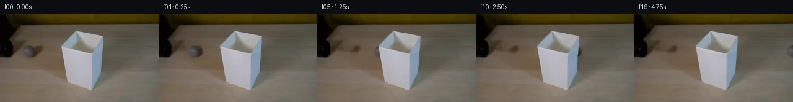
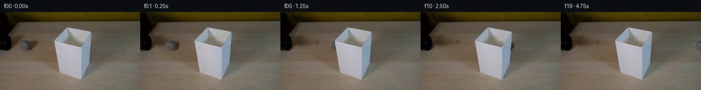
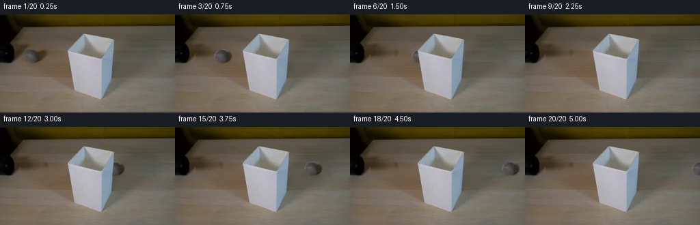
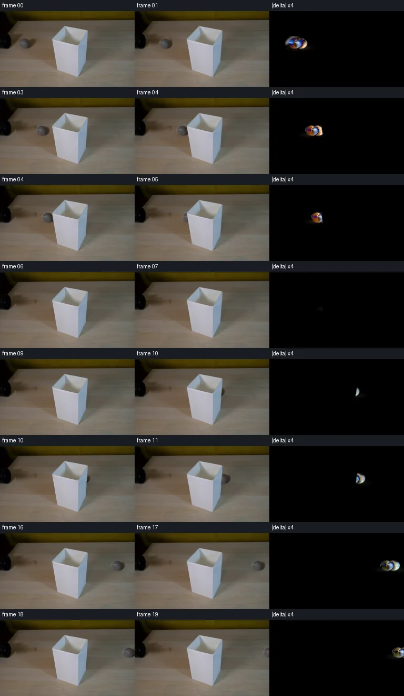

V0 · 初版
2026-11-05T07:11:30.061947+00:00 · RGB b4449988d257
![]()
Observable Generation Trace
把最终像素视频、Harness 冻结的每轮候选、真实工具事件和 Agent 自述放在同一页。可观测证据与模型自述分开标记，避免把“模型说它检查过”误当成真实工具调用。
![首帧]()
Static locked-off single-shot with fixed frame throughout filmed with constant framerate in real-time. The scene shows a realistic scientific demonstration. The scene only contains the described setup and actions. A small white lampshade is on a light wooden table and a black tube points from the left side to the right side. The grey tennis ball rolls from the left straight out of the black tube over the entire table.
首帧显示在左侧播放器初始画面。Track 权限、隔离和 tensor 一致性来自 run manifest，而不是 METHOD.md。
默认勾选初版和最终版；可选其他版本一起同步播放。仅检查图更新的连续重复快照已合并，回退旧视频仍保留为一次修订。
Observable events
来源：events.jsonl + run manifest
视觉工具可用，但 events.jsonl 没有记录到成功的输出 PNG 读取；存在 self-refine 候选，不等于存在可验证的视觉 self-refine。
Frozen candidates
每张图来自该 round 的真实 00 / 01 / 05 / 10 / 19 帧

pixels 43c37ddcc8afcdd5 · code e8400ff1daec1064
--- previous/generate.py +++ current/generate.py @@ -0,0 +1,193 @@ +#!/usr/bin/env python3 +"""Generate the 20-frame locked-camera ball-roll continuation.""" + +from pathlib import Path + +import cv2 +import numpy as np +from PIL import Image, ImageDraw, ImageFont + +import artifact_io + + +ROOT = Path(__file__).resolve().parent +W, H = 256, 144 +BALL_X0, BALL_Y = 48.0, 61.0 + + +def smoothstep(edge0, edge1, value): + x = np.clip((value - edge0) / (edge1 - edge0), 0.0, 1.0) + return x * x * (3.0 - 2.0 * x) + + +def make_clean_plate(source): + """Remove only the starting ball and its small shadow from the table.""" + mask = np.zeros((H, W), np.uint8) + cv2.ellipse(mask, (48, 61), (15, 13), 0, 0, 360, 255, -1, cv2.LINE_AA) + # Navier-Stokes follows the nearly horizontal wood structure more smoothly + # than a flat painted patch at this small scale. + plate = cv2.inpaint(source, mask, 5.0, cv2.INPAINT_NS) + + # Reintroduce faint horizontal grain through the filled area by borrowing + # same-row high-frequency residuals from an adjacent clear table patch. + for y in range(49, 75): + donor = source[y, 67:98].astype(np.float32) + donor_blur = cv2.GaussianBlur(donor[None, :, :], (7, 1), 0)[0] + residual = donor - donor_blur + for x in range(32, 66): + taper_x = min(1.0, (x - 31) / 5.0, (66 - x) / 5.0) + taper_y = min(1.0, (y - 48) / 5.0, (75 - y) / 5.0) + amount = max(0.0, min(taper_x, taper_y)) * 0.34 + plate[y, x] = np.clip( + plate[y, x].astype(np.float32) + amount * residual[(x - 32) % len(residual)], + 0, + 255, + ) + return plate.astype(np.uint8) + + +def make_ball_assets(source, plate): + """Recover a softly feathered neutral ball foreground from frame zero.""" + yy, xx = np.mgrid[0:H, 0:W] + radial = np.sqrt(((xx - BALL_X0) / 12.8) ** 2 + ((yy - BALL_Y) / 9.8) ** 2) + geometric = 1.0 - smoothstep(0.82, 1.08, radial) + + # Neutral grey is a strong discriminator from the warm wood at the edge. + srcf = source.astype(np.float32) + chroma = np.maximum.reduce( + [np.abs(srcf[..., 0] - srcf[..., 1]), + np.abs(srcf[..., 1] - srcf[..., 2]), + np.abs(srcf[..., 0] - srcf[..., 2])] + ) + neutral = 1.0 - smoothstep(7.0, 23.0, chroma) + alpha = geometric * (0.76 + 0.24 * neutral) + alpha[radial <= 0.77] = 1.0 + alpha = cv2.GaussianBlur(alpha.astype(np.float32), (3, 3), 0.42) + alpha = np.clip(alpha, 0.0, 1.0) + + # Decontaminate feather pixels from their original warm background. + a = np.maximum(alpha[..., None], 0.08) + foreground = (srcf - (1.0 - alpha[..., None]) * plate.astype(np.float32)) / a + foreground = np.clip(foreground, 0.0, 255.0) + foreground[alpha < 0.02] = 0.0 + return foreground, alpha + + +def make_shade_mask(): + """Soft-edged silhouette of the foreground lampshade.""" + mask = np.zeros((H, W), np.uint8) + polygon = np.array( + [[116, 28], [167, 37], [164, 65], [149, 125], [108, 109], [99, 53]], + dtype=np.int32, + ) + cv2.fillPoly(mask, [polygon], 255, cv2.LINE_AA) + return cv2.GaussianBlur(mask.astype(np.float32) / 255.0, (3, 3), 0.38) + + +def shifted_field(field, dx, fill=0.0): … diff truncated; 106 more lines …

pixels 05d915f89e629f37 · code 9a1b4842543e4f1a
--- previous/generate.py
+++ current/generate.py
@@ -22,28 +22,33 @@
def make_clean_plate(source):
"""Remove only the starting ball and its small shadow from the table."""
- mask = np.zeros((H, W), np.uint8)
- cv2.ellipse(mask, (48, 61), (15, 13), 0, 0, 360, 255, -1, cv2.LINE_AA)
- # Navier-Stokes follows the nearly horizontal wood structure more smoothly
- # than a flat painted patch at this small scale.
- plate = cv2.inpaint(source, mask, 5.0, cv2.INPAINT_NS)
+ plate = source.astype(np.float32).copy()
+ x0, x1 = 30, 68
- # Reintroduce faint horizontal grain through the filled area by borrowing
- # same-row high-frequency residuals from an adjacent clear table patch.
- for y in range(49, 75):
- donor = source[y, 67:98].astype(np.float32)
- donor_blur = cv2.GaussianBlur(donor[None, :, :], (7, 1), 0)[0]
- residual = donor - donor_blur
- for x in range(32, 66):
- taper_x = min(1.0, (x - 31) / 5.0, (66 - x) / 5.0)
- taper_y = min(1.0, (y - 48) / 5.0, (75 - y) / 5.0)
- amount = max(0.0, min(taper_x, taper_y)) * 0.34
- plate[y, x] = np.clip(
- plate[y, x].astype(np.float32) + amount * residual[(x - 32) % len(residual)],
- 0,
- 255,
- )
- return plate.astype(np.uint8)
+ # The tabletop grain is almost horizontal. For every affected scanline,
+ # estimate its unobscured left and right colors from short clear runs and
+ # bridge them with a smooth cubic, then add weak donor-row grain residual.
+ for y in range(47, 76):
+ left = source[y, 24:31].astype(np.float32).mean(axis=0)
+ right = source[y, 68:75].astype(np.float32).mean(axis=0)
+ donor = source[y, 75:96].astype(np.float32)
+ donor_smooth = cv2.GaussianBlur(donor[None, :, :], (9, 1), 0)[0]
+ residual = donor - donor_smooth
+ for x in range(x0, x1 + 1):
+ u = (x - x0) / (x1 - x0)
+ u = u * u * (3.0 - 2.0 * u)
+ base = left * (1.0 - u) + right * u
+ grain = residual[(x - x0) % len(residual)] * 0.28
+ plate[y, x] = base + grain
+
+ # Feather the rectangular reconstruction into untouched pixels on all
+ # sides while keeping the ball/shadow core completely replaced.
+ repair = plate.copy()
+ alpha = np.zeros((H, W), np.float32)
+ cv2.ellipse(alpha, (48, 61), (19, 15), 0, 0, 360, 1.0, -1, cv2.LINE_AA)
+ alpha = cv2.GaussianBlur(alpha, (7, 7), 1.35)
+ plate = repair * alpha[..., None] + source.astype(np.float32) * (1.0 - alpha[..., None])
+ return np.clip(np.rint(plate), 0, 255).astype(np.uint8)
def make_ball_assets(source, plate):Final visual checks
Harness 保存的最终产物


Agent claims
以下文字由生成 Agent 撰写，不等同于工具证据
x = 48 + 11*t. The visual layer (including its soft shadow) translates with it. Subtle rotating low-contrast surface shading supplies a rolling cue without inventing a strong seam absent from the source.first_frame.png.| Frame | Time | Ball center / event |
|---|---|---|
| 00 | 0.00 s | (48,61), exact supplied first frame |
| 01 | 0.25 s | (59,61), rolling right |
| 02 | 0.50 s | (70,61), rolling right |
| 03 | 0.75 s | (81,61), rolling right |
| 04 | 1.00 s | (92,61), approaching lampshade |
| 05 | 1.25 s | (103,61), partly occluded by left shade edge |
| 06 | 1.50 s | (114,61), almost fully behind shade |
| 07 | 1.75 s | (125,61), fully hidden |
| 08 | 2.00 s | (136,61), fully hidden |
| 09 | 2.25 s | (147,61), fully hidden |
| 10 | 2.50 s | (158,61), begins nearing right shade edge |
| 11 | 2.75 s | (169,61), partly reappears |
| 12 | 3.00 s | (180,61), fully visible to right of shade |
| 13 | 3.25 s | (191,61), rolling right |
| 14 | 3.50 s | (202,61), rolling right |
| 15 | 3.75 s | (213,61), rolling right |
| 16 | 4.00 s | (224,61), rolling right |
| 17 | 4.25 s | (235,61), nearing right edge |
| 18 | 4.50 s | (246,61), partially leaving frame |
| 19 | 4.75 s | (257,61), almost entirely out of frame |
I used only first_frame.png, prompt.txt, and local deterministic pixel operations.
artifact_io.save writes the PNG sequence, packed uint32 tensor, inspection sheet, and standalone HTML player. A separate transition sheet shows selected adjacent pairs and 4x absolute differences.pixels.npz and every PNG, verifies all 20 decoded frames against the in-memory RGB frames, and verifies the tensor is uint32 packed as 0xRRGGBB.